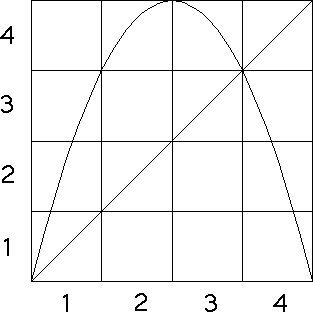
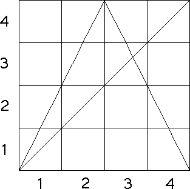

| The s = 4.0 logistic map L(x) and the s = 2.0
tent map T(x) have driven IFS determined entirely by their forbidden pairs because of a
particular relation between the graphs and bins. |
| For both graphs, note each bin on the bottom of the unit
square goes to a union of complete bins on the side of the square. |
|  |
 |
 |
| L(bin1) = bin1 ∪ bin2 ∪ bin3 |
| L(bin2) = bin4 |
| L(bin3) = bin4 |
| L(bin4) = bin1 ∪ bin2 ∪ bin3 |
|
|
| T(bin1) = bin1 ∪ bin2 |
| T(bin2) = bin3 ∪ bin4 |
| T(bin3) = bin3 ∪ bin4 |
| T(bin4) = bin1 ∪ bin2 |
|
|
| This relation between graphs and bins is called a
Markov partition of the
trapping square. For these examples,
the trapping sqaure is the whole unit square. |
| By contrast, here is an example that is not a Markov
partition. |
| Importance of Markov partitions For a Markov partition, the driven IFS is
always determined by its empty
length 2 subsquares. |
| In this way, these are the simplest of the driven IFS. |
| One way to measure the complexity of a dynamical process is to find the
smallest collection of empty subsquares needed to generate the driven IFS. This is
called the grammatical complexity of the
function and the partition. |
| Here is an example illustrating the relation between the bin transitions of the
graph and the empty squares of the driven IFS. |
|